가스기사 (2008-07-27 기출문제)
1과목: 가스유체역학
1. 다음 중 마하수(mach number)를 옳게 나타낸 것은?
- 유속을 음속으로 나눈 값
- 유속을 광속으로 나눈 값
- 유속을 기체분자의 절대속도 값으로 나눈 값
- 유속을 전자속도로 나눈 값
(정답률: 92%)

2. 음파의 속도를 나타내지 않는 것은? (단, k는 비열비, T는 절대온도, R은 가스상수이다.)
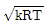
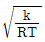
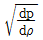
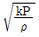
(정답률: 50%)
3. 절대 압력이 100kPa 이고, 10℃인 공기의 밀도는 약 몇 ㎏/m3인가? (단, 공기의 기체상수 R은 287J/㎏·K이며 이상기체로 가정한다.)
- 1.23
- 10.84
- 22.25
- 100
(정답률: 48%)
4. 다음 중 동점성 계수의 단위를 옳게 나타낸 것은?
- ㎏/m2
- ㎏/m·s
- m2/s
- m2/㎏
(정답률: 70%)
5. 도관 단면의 급격한 팽창에 따른 손실수두를 나타내는 식은? (단, Va는 초기 단면에서의 평균유속, Vb는 팽창 단면에서의 평균유속, g는 중력가속도이다.)
- (Va-Vb)3
- (Va-Vb)
- (Va-Vb)3/2g
- (Va-Vb)/2g
(정답률: 47%)
6. 다음 중 유적선(path line)을 가장 옳게 설명한 것은?
- 곡선의 접선방향과 그 점의 속도 방향이 일치하는 선
- 속도 벡터의 방향을 갖는 연속적인 가상의 선
- 유체입자가 주어진 시간동안 통과한 경로
- 모든 유체입자의 순간적인 궤적
(정답률: 알수없음)
7. 초음속 흐름인 확대관에서 감소하지 않는 것은? (단, 등엔트로피 과정이다.)
- 압력
- 온도
- 속도
- 밀도
(정답률: 67%)
8. 이상유체에 대한 다음 설명 중 옳은 것을 모두 나타낸 것은?
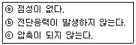
- ⓐ, ⓑ
- ⓐ, ⓒ
- ⓑ, ⓒ
- ⓐ, ⓑ, ⓒ
(정답률: 82%)
9. 비압축성 유체가 흐르고 있는 유로가 갑자기 축소될 때 일어나는 현상이 아닌 것은?
- 질량유량의 감소
- 유로의 단면적 축소
- 유속의 증가
- 압력의 감소
(정답률: 60%)
10. 다음 차원식 중에서 질량을 나타내는 것은? (단, F는 힘, L은 길이, T는 시간의 차원을 나타낸다.)
- [FL-2T2]
- [FL-1T2]
- [FL-2T]
- [FL-1T]
(정답률: 60%)
11. 제트엔진 비행기가 400m/s로 비행하는데 30㎏/s의 공기를 소비한다. 4900N의 추진력을 만들 때 배출되는 가스의 비행기에 대한 상대 속도는 약 몇 m/s인가? (단, 연료의 소비량은 무시한다.)
- 563
- 583
- 603
- 623
(정답률: 22%)
12. 내경이 52.9㎜인 강철관에 공기가 흐를 때 한 단면에서 압력이 3atm, 온도가 20℃, 평균유속이 75m/s이며, 이 관의 하부에 내경 67.9㎜의 강철관이 접속되어 있고 압력이 2atm, 온도가 30℃라면 이 점에서의 평균 유속은 약 몇 m/s인가? (단, 공기는 이상기체로 가정한다.)
- 45.6
- 50.6
- 65.6
- 70.6
(정답률: 16%)
13. 동일한 펌프로 동력을 변화시킬 때 상사조건이 되려면 동력은 회전수와 어떤 관계가 성립하여야 하는가?
- 회전수의 1/2승에 비례
- 회전수와 1대 1로 비례
- 회전수의 2승에 비례
- 회전수의 3승에 비례
(정답률: 73%)
14. 2atm을 수은의 높이로 나타내면 약 몇 m인가?
- 0.76
- 1.14
- 1.52
- 2.28
(정답률: 65%)
15. 뉴턴의 점성법칙과 관련 있는 변수가 아닌 것은?
- 전단응력
- 압력
- 점성계수
- 속도기울기
(정답률: 67%)
16. 다음 경계층에 대한 설명 중 틀린 것은?
- 경계층 바깥층의 흐름은 비점성 유동으로 가정할 수 있다.
- 경계층의 형성은 압력 기울기, 표면조도, 열전달 등의 영향을 받는다.
- 경계층 내에서는 점성의 영향이 작용한다.
- 경계층 내에서는 속도 기울기가 크기 때문에 마찰응력이 감소하여 매우 작게 된다.
(정답률: 80%)
17. LPG 이송 시 탱크로리 상부를 가압하여 액을 저장탱크로 이송시킬 때 사용되는 동력장치는 무엇인가?
- 원심펌프
- 압축기
- 기어펌프
- 송풍기
(정답률: 55%)
18. 메탄가스 1㎏을 일정한 체적하에서 5℃에서 25℃까지 가열하는데 필요한 열량이 10kcal 라고 하면 정압비열은 약 몇 kcal/㎏·℃인가? (단, 메탄의 기체상수는 1.987kcal/kmol·℃이며 이상기체로 가정한다.)
- 0.124
- 0.624
- 1.363
- 2.487
(정답률: 36%)
19. 다음은 축소-확대 노즐을 통해 흐르는 등엔트로피 흐름에서 노즐거리에 대한 압력 분포 곡선이다. 노즐출구에의 압력을 낮출 때 처음으로 음속흐름(sonic flow)이 일어나기 시작하는 선을 나타낸 것은?
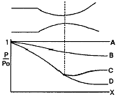
- A
- B
- C
- D
(정답률: 75%)
20. 지름이 1m인 관속을 3600m3/h로 흐르는 유체의 평균유속은 약 몇 m/s인가?
- 1.27
- 2.47
- 4.78
- 5.36
(정답률: 48%)
2과목: 연소공학
21. “혼합가스의 압력은 각 기체가 단독으로 확산할 때의 분압의 합과 같다.” 라는 것은 누구의 법칙인가?
- Boyle-Charler의 법칙
- Dalton의 법칙
- Graham의 법칙
- Avogadro의 법칙
(정답률: 59%)
22. 가연성가스와 공기를 혼합하였을 때 폭굉범위는 일반적으로 어떻게 되는가?
- 폭발범위와 동일한 값을 가진다.
- 가연성가스의 폭발상한계 값보다 큰 값을 가진다.
- 가연성가스의 폭발하한계 값보다 작은 값을 가진다.
- 가연성가스의 폭발하한계와 상한계값 사이에 존재한다.
(정답률: 77%)
23. 다음 중 열역학 제0법칙에 대하여 설명한 것은?
- 저온체에서 고온체로 아무 일도 없이 열을 전달할 수 없다.
- 절대온도 0에서 모든 완전 결정체의 절대 엔트로피의 값은 0이다.
- 기계가 일을 하기 위해서는 반드시 다른 에너지를 소비해야 하고 어떤 에너지도 소비하지 않고 계속 일을 하는 기계는 존재하지 않는다.
- 온도가 서로 다른 물체를 접촉시키면 높은 온도를 지닌 물체의 온도는 내려가고, 낮은 온도를 지닌 물체의 온도는 올라가서 두 물체의 온도 차이는 없어진다.
(정답률: 67%)
24. 폴리트로픽변화에서 “Pvn＝일정” 일 때 폴리트로픽지수 n의 값이 ∞인 경우의 열역학적 변화는?
- 등온변화
- 등적변화
- 단열변화
- 폴리트로픽변화
(정답률: 60%)
25. 체적이 0.8m3인 용기 내에 분자량이 20인 이상기체 10㎏ 이 들어있다. 용기 내의 온도가 30℃라면 압력은 약 몇 MPa인가?
- 1.57
- 2.45
- 3.37
- 4.35
(정답률: 62%)
26. 다음은 증기압축냉동사이클의 T-S 선도를 나타낸 것이다. 3→4는 어떤 과정인가?
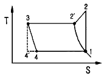
- 단열압축 과정
- 등압 과정
- 등온 과정
- 등엔탈피 과정
(정답률: 22%)
27. 가스의 폭발에 대한 설명으로 틀린 것은?
- 압력이 상승하거나 온도가 높아지면 가스의 폭발범위는 일반적으로 넓어진다.
- 가스의 화염전파 속도가 음속보다 큰 경우에 일어나는 충격파를 폭굉이라고 한다.
- 정상연소 속도가 큰 혼합가스일수록 폭굉유도거리는 길어진다.
- 혼합가스의 폭발은 르샤트리에의 법칙에 따른다.
(정답률: 50%)
28. 연소에서 공기비가 작을 때의 현상이 아닌 것은?
- 매연의 발생이 심해진다.
- 미연소에 의한 열손실이 증가한다.
- 배출가스 중의 NO2의 발생이 증가한다.
- 미연소 가스에 의한 역화의 위험성이 증가한다.
(정답률: 55%)
29. 방폭성능을 가진 전기기기 중 정상 시 및 사고(단선, 단락, 지락 등)시에 발생하는 전기불꽃·아크 또는 고온부에 의하여 가연성가스가 점화되지 아니하는 것이 점화시험, 기타 방법에 의하여 확인된 구조를 무엇이라고 하는가?
- 안전증방폭구조
- 본질안전방폭구조
- 내압방폭구조
- 압력방폭구조
(정답률: 85%)
30. 배기가스의 온도가 120℃인 굴뚝에서 통풍력 12㎜H2O를 얻기 위해서 필요한 굴뚝의 높이는 약 몇 m인가? (단, 대기의 온도는 20℃이다.)
- 10
- 24
- 32
- 39
(정답률: 35%)
31. 폭발을 원인에 따라 분류할 때 물리적 폭발에 해당되지 않은 것은?
- 증기폭발
- 중합폭발
- 금속선폭발
- 고체상 전이폭발
(정답률: 60%)
32. 도시가스의 조성을 조사해보니 부피조성으로 H2 35%, CO 24%, CH4 13%, H2 20%, O2 8%이었다. 이 도시가스 1Nm3를 완전연소시키기 위하여 필요한 이론공기량은 약 몇 Nm3인가?
- 1.26
- 2.26
- 3.26
- 4.26
(정답률: 43%)
33. 다음 중 확산연소에 해당되는 것은?
- 코크스나 목탄의 연소
- 대부분의 액체 연료의 연소
- 경계층이 형성된 기체연료의 연소
- 분무기로 유화시킨 액체연료의 연소
(정답률: 56%)
34. 무게 조성으로 프로판 66%, 탄소 24%인 연료 100g을 연소하는데 필요한 이론산소량은 약 몇 g인가? (단, C, O, H의 원자량은 각각 12, 16, 1이다.)
- 256
- 288
- 304
- 320
(정답률: 50%)
35. 다음 중 이론공기량(Nm3/㎏)이 가장 적게 필요한 연료는?
- 역청탄
- 코크스
- 고로가스
- LPG
(정답률: 60%)
36. 이상기체 10㎏을 240k 만큼 온도를 상승시키는데 필요한 열량이 정압인 경우와 정적인 경우에 그 차가 415kJ이었다. 이 기체의 가스상수는 몇 kJ/㎏·K인가?
- 0.173
- 0.287
- 0.381
- 0.423
(정답률: 45%)
37. 고체연료에서 탄화도가 높은 경우에 대한 설명으로 틀린 것은?
- 수분이 감소한다.
- 발열량이 증가한다.
- 연소속도가 느려진다.
- 착화온도가 낮아진다.
(정답률: 48%)
38. 일산화탄소 1m3를 완전연소시키는데 필요한 이론공기량은 약 몇 Nm3인가?
- 1.2
- 2.4
- 3.2
- 4.4
(정답률: 58%)
39. 층류예혼합화염과 비교한 난류예혼합화염의 특징에 대한 설명으로 옳은 것은?
- 화염의 두께가 얇다.
- 화염의 밝기가 어둡다.
- 연소 속도가 현저하게 늦다.
- 화염의 배후에 다량의 미연소분이 존재한다.
(정답률: 80%)
40. 다음 중 철광석의 환원에 이용되는 가스는?
- CO2
- CO
- CH4
- H2
(정답률: 50%)
3과목: 가스설비
41. 도시가스설비에 대한 전기방식(防蝕)의 방법이 아닌 것은?
- 희생양극법
- 외부전원법
- 배류법
- 압착전원법
(정답률: 70%)
42. 피스톤 행정용량 0.00248m3, 회전수 175rpm의 압축기로 1시간에 토출구로 92 ㎏/h의 가스가 통과하고 있을 때 가스 토출효율은 약 몇 %인가? (단, 토출가스 1㎏을 흡입한 상태로 환산한 체적은 0.189m3이다.)
- 66.8
- 70.2
- 76.8
- 82.2
(정답률: 29%)
43. 아세틸렌을 2.5MPa의 압력으로 압축하려고 한다. 이때 사용되는 희석제는?
- 황산
- 염화칼슘
- 탄산소다
- 메탄
(정답률: 37%)
44. 다음과 같은 성질을 갖는 가스는?
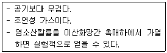
- 산소
- 질소
- 염소
- 수소
(정답률: 75%)
45. 단열을 한 배관 중에 작은 구멍을 내고 이 관에 압력이 있는 유체를 흐르게 하면 유체가 작은 구멍을 통할 때 유체의 압력이 하강함과 동시에 온도가 변화하는 현상을 무엇이라고 하는가?
- 토리첼리 효과
- 줄-톰슨 효과
- 베르누이 효과
- 도플러 효과
(정답률: 56%)
46. LP 가스 공급설비에서 공기혼합(air dilute)방식의 장점이 아닌 것은?
- 연소효율이 증대된다.
- 열량 조절이 자유롭다.
- 공급배관에서 가스의 재액화를 방지할 수 있다.
- 폭발 범위 내의 혼합가스를 형성하는 위험성이 없다.
(정답률: 38%)
47. 웨베지수(WI)에 대한 설명으로 옳은 것은?
- 가스온도와 가스비중과의 관계를 나타낸다.
- 가스온도와 가스압력과의 관계를 나타낸다.
- 가스발열량과 가스비중과의 관계를 나타낸다.
- 가스발열량과 가스압력과의 관계를 나타낸다.
(정답률: 60%)
48. 고압식 액체산소 분리장치에 대한 설명으로 틀린 것은?
- 원료 공기는 압축기에 흡입되어 150~200atm으로 압축된다.
- 건조기에는 고형 가성소다 또는 실리카겔 등의 흡착제가 충전되어 있다.
- 질소는 과냉기에서 액화된 다음 질소탱크에 저장된다.
- 상부탑 하부에 액체 산소가 분리되어 액체 산소 탱크에 저장된다.
(정답률: 25%)
49. 프로판 1m3에 공기 2m3을 희석하여 도시가스를 제조하는 경우 다음 중 옳은 것은? (단, 프로판가스의 열량은 4000kcal/m3이다.)
- 혼합가스의 열량은 8000kcal/m3이며, 폭발범위 밖이므로 혼합이 가능하다.
- 혼합가스의 열량은 12000kcal/m3이며, 폭발범위 밖이므로 혼합이 가능하다.
- 혼합가스의 열량은 8000kcal/m3이며, 폭발범위 내에 들어가므로 혼합이 불가능하다.
- 혼합가스의 열량은 12000kcal/m3이며, 폭발범위 내에 들어가므로 혼합이 불가능하다.
(정답률: 55%)
50. 공기액화분리장치에서 반드시 제거해야 하는 물질이 아닌 것은?
- 질소
- 탄산가스
- 아세틸렌
- 수분
(정답률: 86%)
51. 펌프를 운전할 때 펌프 내에 액이 충만하지 않으면 공회전 하여 펌핑이 이루어지지 않는다. 이러한 현상을 방지하기 위하여 펌프 내에 액을 충만 시키는 것을 무엇이라 하는가?
- 맥동
- 프라이밍
- 캐비테이션
- 서징
(정답률: 81%)
52. 고압가스 제조시설의 플레어스텍에서 처리가스의 액체성분을 제거하기 위한 설비는?
- Knock-out drum
- Seal drum
- Flame arrestor
- Pilot burner
(정답률: 17%)
53. 도시가스 제조설비 중 나프타의 접촉분해(수증기개질)법에서 생성가스 중 메탄(CH4) 성분을 많게 하는 조건은?
- 반응온도를 저하시키고 압력을 상승시킨다.
- 반응온도를 상승시키고 압력을 감소시킨다.
- 반응온도 및 압력을 감소시킨다.
- 반응온도 및 압력을 상승시킨다.
(정답률: 57%)
54. 어떤 냉동기에서 0℃의 물로 0℃의 얼음 3톤을 만드는데 100kW/h의 일이 소요되었다면 이 냉동기의 성능계수는? (단, 물의 융해열은 80kcal/㎏이다.)
- 1.72
- 2.79
- 3.72
- 4.73
(정답률: 64%)
55. 고압가스 제조 장치의 재료에 대한 설명으로 옳지 않은 것은?
- 상온건조 상태의 염소가스에 대하여는 보통강을 사용 할 수 있다.
- 암모니아, 아세틸렌의 배관 재료에는 구리 및 구리합금을 사용할 수 있다.
- 고압의 이산화탄소 세정장치 등에는 내산강을 사용하는 것이 좋다.
- 암모니아 합성탑 내통의 재료에는 18-8 스테인리스강을 사용한다.
(정답률: 91%)
56. 다음 중 수소의 공업적 제법이 아닌 것은?
- 수성가스법
- 석유 분해법
- 천연가스 분해법
- 하버 보시법
(정답률: 53%)
57. 터보형 압축기에 대한 설명으로 옳지 않은 것은?
- 연속 토출로 맥동현상이 적다.
- 설치면적이 크고, 효율이 높다.
- 운전 중 서징현상에 주의해야 한다.
- 윤활유가 필요 없어 기체에 기름의 혼입이 적다.
(정답률: 44%)
58. LPG 저장탱크의 설치위치에 따른 위험장소 분류 및 방폭구조에 대한 설명으로 옳은 것은?
- 0종 위험장소란 가연성가스의 농도가 연속해서 폭발하한계 이상으로 되는 장소를 말하며, 원칙적으로 특수방폭구조를 사용해야 한다.
- 1종 장소란 사고가 발생한 경우에 가연성가스가 체류하여 위험하게 될 우려가 있는 장소를 말하며 주로 내압방폭구조를 많이 사용한다.
- 2종 장소는 밀폐된 용기 또는 설비 내에 밀봉된 가연성가스가 설비의 오조작시 누출할 위험이 있는 장소로서 안전증 방폭구조를 많이 사용한다.
- 1종 장소에 주로 사용하는 내압방폭구조는 내부 등에 보호가스를 압입하여 내부압력이 유지되므로서 가연성 가스가 내부로 유입되지 못하도록 하는 구조이다.
(정답률: 47%)
59. 흡열 화합물이므로 압축하면 폭발할 우려가 있어 다공질 물질을 충전하고, 디메틸포름아미드를 침윤시키고 여기에 용해시켜 용기에 충전하는 가스는?
- 시안화수소
- 아세틸렌
- 암모니아
- 수소
(정답률: 54%)
60. 펌프의 이상현상인 베이퍼록(Vapor-lock)을 방지하기 위한 방법으로 틀린 것은?
- 펌프의 설치 위치를 낮춘다.
- 흡입측 관의 직경을 크게 한다.
- 실린더 라이너의 외부를 가열한다.
- 펌프의 회전수를 줄이거나, 흡입관로를 청소한다.
(정답률: 69%)
4과목: 가스안전관리
61. 방류둑의 구조 기준에 대한 설명 중 틀린 것은?
- 성토는 수평에 대하여 45°이하의 기울기로 한다.
- 방류둑의 재료는 철근콘크리트, 철골, 금속, 흙 또는 이들을 혼합하여야 한다.
- 방류둑은 액밀한 것이어야 한다.
- 방류둑 성토 윗부분의 폭은 50㎝ 이상으로 한다.
(정답률: 70%)
62. 다음 가스누출검지경보장치의 성능기준에 대한 설명 중 틀린 것은?
- 가연성가스의 경보농도는 폭발하한계의 1/4이하로 할 것
- 독성가스의 경보농도는 허용농도 이하로 할 것
- 경보기의 정밀도는 경보농도설정치에 대하여 가연성 가스용에 있어서는 ±25% 이하로 할 것
- 지시계의 눈금은 독성가스는 0부터 허용농도의 5배 값을 눈금범위에 명확하게 지시하는 것일 것
(정답률: 54%)
63. 다음 중 압축가스의 저장탱크 및 용기 저장능력의 산정식을 옳게 나타낸 것은? (단, Q : 설비의 저장능력[m3], P : 35℃ 에서의 최고충전압력[MPa], V1 : 설비의 내용적[m3]이다.)
- Q＝(10P-1)/V1
- Q＝1.5PV1
- Q＝(1-P)V1
- Q＝(10P＋1)V1
(정답률: 60%)
64. 용적 100L의 초저온용기에 200㎏의 산소를 넣고 외기 온도 25℃인 곳에서 10 시간 방치한 결과 180㎏의 산소가 남아있다. 이 용기의 열침입량(kcal/h·℃·L)의 값과, 단열성능시험에의 합격여부로서 옳은 것은? (단, 액화산소의 비점은 –183℃, 기화잠열은 51kcal/㎏이다.)
- 0.02, 불합격
- 0.⑤, 합격
- 0.0⑤, 불합격
- 0.008, 합격
(정답률: 알수없음)
65. 독성가스 외의 고압가스의 용기에 의한 운반기준으로 틀린 것은?
- 운반 중의 충전용기는 항상 40℃ 이하를 유지하여야 한다.
- 차량에 적재하는 경우 최대적재량을 초과하여 적재할 수 없다.
- 액화석유가스를 오토바이에 의하여 운반할 경우에는 용기운반 전용적재함을 갖추어야 한다.
- 액화석유가스를 오토바이에 의하여 운반할 경우 용기의 충전량은 30㎏ 이하이어야 한다.
(정답률: 80%)
66. 공급자의 안전 점검기준의 항목에 해당되지 않는 것은?
- 다공질물 교체여부
- 충전용기의 설치위치
- 충전용기와 화기와의 거리
- 충전용기 및 배관의 설치상태
(정답률: 60%)
67. 하천 또 수로를 횡단하여 배관을 매설할 경우 다음 중 이중관으로 하여야 하는 가스는?
- 염소
- 수소
- 아세틸렌
- 산소
(정답률: 54%)
68. 냉동기의 냉매설비는 진동, 충격, 부식 등으로 냉매가스가 누출되지 않도록 조치하여야 한다. 다음 중 그 조치 방법이 아닌 것은?
- 주름관을 사용한 방진조치
- 냉매설비 중 돌출부위에 대한 적절한 방호조치
- 냉매가스가 누출될 우려가 있는 부분에 대한 부식방지 조치
- 냉매설비 중 냉매가스가 누출될 우려가 있는 곳에 차단밸브 설치
(정답률: 40%)
69. 도시가스공급시설 또는 그 시설에 속하는 계기를 장치하는 회로에 설치하는 것으로서 온도 및 압력과 그 시설의 상황에 따라 안전확보를 위한 주요부분에 설비가 잘못 조작되거나 이상이 발생하는 경우에 자동으로 가스의 발생을 차단시키는 장치를 무엇이라 하는가?
- 벤트스텍
- 가스누출검지통보설비
- 안전밸브
- 인터록기구
(정답률: 80%)
70. 액화석유가스 이외의 액화가스를 충전하는 용기의 부속품을 표시하는 기호는?
- AG
- PG
- LG
- LPG
(정답률: 70%)
71. 저장탱크에 액화석유가스를 충전하려면 가스의 용량이 상용의 온도에서 저장탱크 내용적의 몇 %를 넘지 않아야 하는가?
- 80
- 90
- 95
- 98
(정답률: 50%)
72. 정전기 제거설비를 정상상태로 유지하기 위한 검사항목이 아닌 것은?
- 지상에서 접지저항치
- 지상에서의 접속부의 접속 상태
- 지상에서의 접지접속선의 절연여부
- 지상에서의 절선 그밖에 손상부분의 유무
(정답률: 43%)
73. 압축가스의 용적이 80m3인 독성가스 운반 시 반드시 휴대하지 않아도 되는 보호구는?
- 방독마스크
- 공기호흡기
- 보호의
- 보호장갑
(정답률: 82%)
74. 도시가스도매사업의 저장설비 중 저장능력 100ton인 저장탱크의 외면과 사업소 경계까지 유지하여야 하는 안전거리는 몇 m 이상으로 하여야 하는가? (단, 유지하여야 하는 안전거리 계산시 적용하는 상수 C는 0.576으로 한다.)
- 60
- 120
- 140
- 160
(정답률: 8%)
75. 액화암모니아를 제외한 독성가스를 차량에 고정된 탱크에 넣어 운반하고자 할 때 안전기준상 탱크의 내용적은 몇 L를 넘어서는 안 되는가?
- 5000
- 10000
- 12000
- 18000
(정답률: 34%)
76. 안전관리규정의 작성기준에서 다음 [보기] 중 종합적안전관리규정에 포함되어야 할 항목을 모두 나열한 것은?
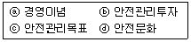
- ⓐ, ⓑ
- ⓑ, ⓒ, ⓓ
- ⓐ, ⓒ ⓓ
- ⓐ, ⓑ, ⓒ, ⓓ
(정답률: 50%)
77. 자동차용기충전시설에서 충전기의 시설기준에 대한 설명으로 옳은 것은?
- 충전기 상부에는 닫집모양의 차양을 설치하여야 하며, 그 면적은 공지면적의 2분의 1 이하로 할 것
- 배관이 닫집모양의 차양내부를 통과하는 경우에는 2개 이상의 점검구를 설치할 것
- 닫집모양의 차양내부에 있는 배관으로서 점검이 곤란한 장소에 설치하는 배관은 안전상 필요한 강도를 가지는 플랜지접합으로 할 것
- 충전기 주위에는 가스누출자동차단장치를 설치할 것
(정답률: 44%)
78. 다음 중 가연성 가스이면서 독성가스인 것은?
- 염소, 불소, 프로판
- 암모니아, 질소, 수소
- 프로필렌, 오존, 아황산가스
- 산화에틸렌 , 염화메탄, 황화수소
(정답률: 62%)
79. 액화석유가스 자동차 용기의 충전시설에서 충전기의 충전 호스는 몇 m 이내로 하여야 하는가?
- 5
- 7
- 8
- 10
(정답률: 50%)
80. 공기액화분리기의 운전을 중지하고 액화산소를 방출해야 하는 기준으로 옳은 것은?
- 액화산소 5L 중 탄화수소의 탄소의 질량이 50mg을 넘을 때
- 액화산소 5L 중 아세틸렌의 질량이 5mg을 넘을 때
- 액화산소 5L 중 탄화수소의 탄소의 질량이 5mg을 넘을 때
- 액화산소 5L 중 아세틸렌의 질량이 0.5mg을 넘을 때
(정답률: 74%)
5과목: 가스계측기기
81. 게겔(Gockel)법에 의한 저급탄화수소 분석 시 분석가스와 흡수액이 옳게 짝지어진 것은?
- 프로필렌 - 황산
- 에틸렌 - 옥소수은 칼륨용액
- 아세틸렌 - 알칼리성 피로랄롤 용액
- 이산화탄소 - 암모니아성 염화제1구리 용역
(정답률: 47%)
82. 다음 중 탄성식 압력계가 아닌 것은?
- 부르돈관식
- 기준분동식
- 다이어프램식
- 벨로우즈식
(정답률: 39%)
83. 제어시스템에서 응답이 목표값에 처음으로 도달하는데 걸리는 시간을 의미하는 것은?
- 시간지연
- 상승시간
- 응답시간
- 오버슈트
(정답률: 67%)
84. 다음 유량계 중 압력차에 의하여 유량을 측정하는 것이 아닌 것은?
- Rota meter
- Orifice meter
- Venturi meter
- Flow-nozzle
(정답률: 22%)
85. 습식가스미터에 대한 다음 설명 중 틀린 것은?
- 계량이 정확하다.
- 설치공간이 크다.
- 일반 가정용에 주로 사용한다.
- 수위조정 등 관리가 필요하다.
(정답률: 80%)
86. 다음 중 미량의 탄화수소를 검지하는데 가장 적당한 검출기는?
- TCD 검출기
- ECD 검출기
- FID 검출기
- NOD 검출기
(정답률: 84%)
87. 다음 주어진 설명과 같은 가스미터기는?
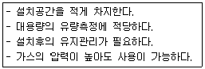
- 막식가스미터기
- 루트미터
- 습식가스미터기
- 오리피스미터
(정답률: 69%)
88. 다음 가스크로마토그래프의 크로마토그램이다. t, t1, t2는 무엇을 나타내는가?
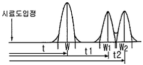
- 이론 단수
- 체류시간
- 분리관의 효율
- 피크의 좌우 변곡점 길이
(정답률: 알수없음)
89. 다이어프램 압력계의 특징에 대한 다음 설명 중 옳은 것은?
- 강도는 높으나 응답성이 좋지 않다.
- 부식성 유체의 측정이 불가능하다.
- 미소한 압력을 측정하기 위한 압력계이다.
- 과잉압력으로 파손되면 그 위험성은 커진다.
(정답률: 알수없음)
90. 측정제어라고도 하며, 2개의 제어계를 조합하여 1차 제어장치가 제어량을 측정하여 제어 명령을 내리고, 2차 제어장치가 이 명령을 바탕으로 제어량을 조절하는 제어를 무엇이라 하는가?
- 정치(正値) 제어
- 추종(追從) 제어
- 비율(比率) 제어
- 캐스케이드(Cascade) 제어
(정답률: 69%)
91. 경사각(θ)이 30°인 경사관식 압력계의 눈금(x)을 읽었더니 60㎝가 상승하였다. 이 때 양단의 차압(P1-P2)은 약 몇 ㎏f/cm2인가? (단, 액체의 비중은 0.8인 기름이다.)
- 0.001
- 0.014
- 0.024
- 0.034
(정답률: 73%)
92. 산소(O2)는 다른 가스에 비하여 강한 상자성체이므로 자장에 대하여 흡인되는 특성을 이용하여 분석하는 가스분석계는?
- 세라믹식 O2 계
- 자기식 O2 계
- 연소식 O2 계
- 밀도식 O2 계
(정답률: 73%)
93. 다음 중 제백(seebeck)효과의 원리를 이용한 온도계는?
- 열전대 온도계
- 서미스터 온도계
- 팽창식 온도계
- 광전관 온도계
(정답률: 73%)
94. 제어시스템에서 불연속적인 제어이므로 제어량이 목표값을 중심으로 일정한 폭의 상하 진동을 하게 되는 현상 즉, 뱅뱅현상이 일어나는 제어는?
- 비례제어
- 비례미분제어
- 비례적분제어
- 온ㆍ오프제어
(정답률: 67%)
95. 다음 중 액면 측정 방법이 아닌 것은?
- 플로우트식
- 압력식
- 정전용량식
- 박막식
(정답률: 42%)
96. 서미스터(thermister)저항체 온도계의 특징에 대한 설명으로 옳은 것은?
- 온도계수가 적으며 균일성이 좋다.
- 저항변화가 적으며 재현성이 좋다.
- 온도상승에 따라 저항치가 감소한다.
- 수분 흡수 시에도 오차가 발생하지 않는다.
(정답률: 알수없음)
97. 가스미터의 표시 중 0.5L/rev가 나타내는 것은?
- 계량실의 내용적
- 계량실의 1주기 체적
- 계량실의 최대허용 유량
- 계량실의 시간당 최대 이론 손실유량
(정답률: 69%)
98. 막식가스미터에서 발생할 수 있는 고장의 형태 중 가스미터에 감도 유량을 흘렸을 때, 미터 지침의 시도(示度)에 변화가 나타나지 않는 고장을 의미하는 것은?
- 감도불량
- 부동
- 불통
- 기차불량
(정답률: 31%)
99. 실내공기의 온도는 15℃이고, 이 공기의 노점은 5℃로 측정되었다. 이 공기의 상대습도는 약 몇 %인가? (단, 5℃, 10℃ 및 15℃의 포화수증기압은 각각 6.54㎜Hg, 9.21㎜Hg 및 12.79㎜Hg이다.)
- 46.6
- 51.1
- 71.0
- 72.0
(정답률: 59%)
100. 가스계량기는 실측식과 추량식으로 분류된다. 다음 중 실측식이 아닌 것은?
- 건식
- 회전식
- 습식
- 벤츄리식
(정답률: 53%)